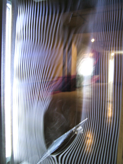
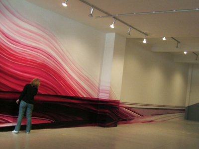

Public Visualization Workshop  Tickets: $25 gen/$5 student*
When: Sunday, Monday and Tuesday, Aug. 6-7-8, 9 AM – 6 PM
Where: South Hall, 435 South Market St. San Jose
Presenter: Olga Kisseleva
LANDSTREAM it is an experimental program, which creates a representation of landscape through the analysis of flows (stream) which cross a space (land), in this « landscapes » the initial scientific data are transformed into a visual information by urban graffers. Today, when our identity is defined especially by our position in the network, by the information which we emit and which we receive, we fix our attention on these invisible flows and we try to determine their importance, their form and their direction. Thus, the landscape - LAND(scape) - is not any more one simple relief. It becomes an association of the waves and signals (STREAM): LANDSTREAM.
LANDSTREAM comprises a term "stream" which means « flow », or, in the data-processing terminology - the continuous flow of information in real time mode. "land" comes from "landscape", because this project introduces a new category of landscape’s representation. LANDSTREAM it is an experimental program, which creates a representation of landscape through the analysis of flows (stream) which cross a given space (land). The work takes a pictorial form, which can be static or animated. In this landscapes their initial scientific data are transformed into visual information. Today, when our identity is defined especially by our position in the network, by the information which we emit and which we receive, we fix our attention on these invisible flows and we try to determine their importance, their form and their direction. Thus, the landscape - LAND(scape) - is not any more one simple relief. It becomes an association of the waves and signals (STREAM): LANDSTREAM. Actually, it is not by questioning a form, that we create new forms, but by producing the new conditions of their emergence. Then, new forms and new possibilities appear. Our protocol places the action of “making” like act of translation of reality to its representation. Consequently, the scientific thought brings a procedural displacement from the emergence of the image in the field of reality to its mode of production in the field of pictorial. It is no more a question to represent or to reproduce, but to re-play the stake’s production of the pictorial representation in our contemporary world.  To represent is to define, to define is to analyze, analyze is to understand. Also, rather than to reproduce or represent the world we build the subjacent image, than the world is given, but that it does not post. The result will not be more abstract than figurative; it will be the field even where the image occurs visible. In LANDSTREAM we create a real time “portrait” of San-Jose trough electromagnetic streams crossing the city. This “portrait” is made visible by collaboration with local graffers. Together, we will measure the density and the quality of electromagnetic fields in different areas of the city, and we will realizes in-city fresco(s) with the real time field’s capturing. Silicon Valley is the cradle of electronic technologies. LANDSTREAM makes visual the streams produced by this technologies. LANDSTREAM also warns about the “electronic pollution” brought by some technologies. California is also an important place for street art, and especially urban graff. LANDSTREAM relates this two local specificies: electronic technologies and street art. LANDSTREAM invites for interaction urban graffers, but also each person, which would try to interpret the scientific vision of electromagnetic streams in language of urban graff. URLs: artist's web site: http://www.kisseleva.org |